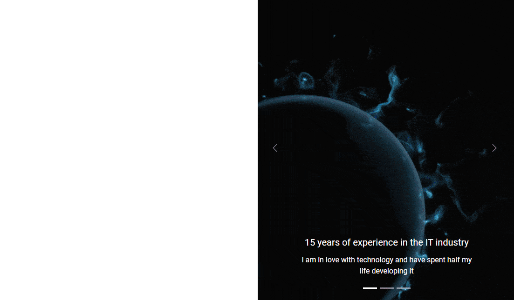

{{< /twsnippet/code >}}{{< /twsnippet/wrapper >}}
{{< /twsnippet/code >}}{{< /twsnippet/wrapper >}}
Our carousel is already working, but it doesn't look perfect. So let's improve a few important details to make it look its best.
Images in the carousel are distorted. So let's use the Object fit and Object position properties to fix this.
As you remember from the previous lessons, to do it in Tailwind CSS we need
to add for example .object-cover and
object-left to the image.
{{< /twsnippet/code >}}{{< /twsnippet/wrapper >}}
Let's add these classes to each of the images in the carousel:
And now the images are perfectly adapted to the carousel, and according to our assumptions, they fill 100% of the screen height.
It's time to take care of a few important details. Let's start with the shadows.
To apply shadows to the carousel, we need to add the appropriate class to
the Carousel items wrapper. So let's add a heavy shadow class
.shadow-2xl there:
Then, using
arbitrary values, let's add a hard rounding just to the bottom left corner of our carousel.
Again, we need to add this to the Carousel items wrapper: